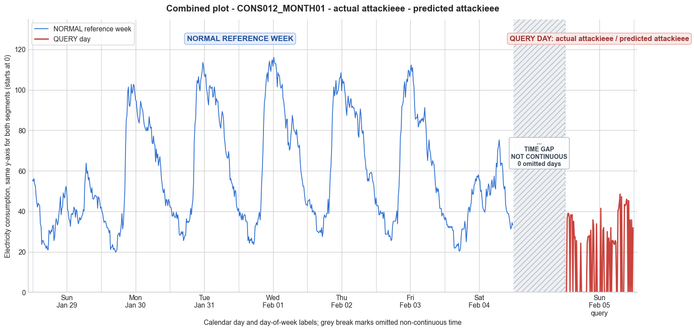

CONS012_MONTH01 · actual attackieee · predicted attackieee
- Pair
- CONS012_MONTH01
- GT
- attackieee
- Prediction
- attackieee
- Binary GT
- attacked
- Binary Prediction
- attacked
- Source
- E010
- Parse
- stored
- Date
- 2012-02-05
- Weekday
- Sunday
- Latency
- 1.99 min
- Tokens
- 9458

Final output
Classification: - Manipulated Identified Attack: - Most Likely: Attack IEEE - Confidence: High - Reasoning: The query day exhibits a pattern where many 15‑minute intervals are exactly 0, while others show consumption values roughly consistent with the reference week’s typical levels (e.g., evening peaks of ~45‑48 vs. ~52‑64 on the reference Sunday). This matches the IEEE attack definition: “For each 15‑minute interval across the entire day, the consumer either reports the actual electricity consumption or substitutes it with zero.” The zeros are scattered throughout the day rather than forming a single contiguous block, which is explicitly described. Attack 2 (on‑off) was considered but typically implies a random **duration** of consecutive zeros, whereas the zeros here are highly fragmented and non‑contiguous. Attack 1 (uniform scaling) was ruled out because the non‑zero values are not uniformly reduced (they vary relative to the reference day) and pure zeros are present. Attack_Behavior_Explanation: - The attacker reported either the actual consumption or zero for each 15‑minute interval, creating an irregular profile with many zero‑readings. Over the whole day, 37 out of 96 intervals are zero, while the non‑zero values appear loosely similar to the normal Sunday pattern but occasionally lower (e.g., morning and evening blocks). This manipulation drastically reduces the total daily energy (mean = 16.69 vs. reference‑week means of 40‑68) and disrupts the consumption trend by introducing abrupt gaps. The attack does not follow a uniform scaling or a single continuous off‑period. Possible technical causes: false data injection (e.g., compromised meter firmware or communication link) that sends a zero reading for selected intervals while occasionally reporting true consumption.
Prompt
You are a domain expert in smart grid security and electricity theft analysis, with deep knowledge of non-technical loss (NTL) attack patterns in smart meters. You are given: 1. A plot of one week of original (normal) energy consumption for a smart meter, provided as context for the customer's typical consumption behavior. 2. A plot of one day of energy consumption for the same smart meter, which may or may not be manipulated. Below are common attack types, each defined by how consumption values are altered, their impact on magnitude and trend, and their possible technical causes. Attack 0: Generated by replacing all electricity consumption samples with zero values for the entire observation duration. Simulates a scenario where no energy usage is reported at all. May be caused by a total meter bypass or severe meter malfunction. Completely eliminates both the trend and magnitude of the consumption profile. Attack 1: Multiplies the actual energy consumption by a constant random value between (0,1). The lower the factor, the higher the severity. Can be triggered by meter bypass, magnetic interference, reverse current, and false data injection. The consumption trend remains the same but the magnitude is uniformly reduced. Attack 2: Generated by replacing consumption samples with zeros for a random duration. Also known as an on-off attack. Can be caused by full meter bypass, false data injection, and reverse current. Changes both the trend and amplitude. Attack 3: The actual consumption is multiplied by different random factors between 0 and 1, with a unique factor per sample. Similar to Attack 1 but the scaling factor varies per reading. Caused by meter bypass, magnetic interference, and reverse current. Changes both the trend and amplitude. Attack 4: Simulates energy theft over a randomly selected period within the observation window. All measurements in that period are reduced. Caused by meter bypass, magnetic interference, reverse current, and false data injection. Changes both the trend and amplitude. Attack 5: Each sample is replaced by a false value obtained by multiplying the average normal consumption by a random variable between 0 and 1, with a different variable per sample. Caused by false data injection. Produces a completely different pattern from the original consumption profile, changing both trend and magnitude. Attack 6: A random cut-off point is selected and all consumption values above it are replaced by that cut-off value. The attacker avoids exceeding a predefined maximum limit. Mainly caused by false data injection. Changes both the trend and amplitude. Attack 7: A random cut-off point is subtracted from each sample; if the result is negative, zero is reported. Similar to Attack 6 but replaces exceeding values with zero instead of the cut-off point. May be caused by false data injection or total meter bypass. Does not change the trend but reduces overall consumption. Attack 9: All samples are replaced by the average daily energy consumption, resulting in a flat constant profile. Easily detectable because constant consumption does not reflect normal customer behavior. Caused by false data injection. Eliminates all trends. Attack 10: Reverses the consumption pattern without reducing the total amount. Applicable when the electricity company uses time-varying pricing, allowing the attacker to shift high consumption to off-peak periods. Caused by false data injection. Changes the trend without decreasing total consumption. Attack 12: The attacker replaces their consumption pattern with that of a lower-consuming user. The legitimate user unknowingly pays the adversary's electricity bill. Caused by false data injection. Attack IEEE: For each 15-minute interval across the entire day, the consumer either reports the actual electricity consumption or substitutes it with zero. The result is a profile where some intervals reflect real consumption while others are zeroed out, creating an irregular pattern across the full day. May be caused by false data injection. Changes both the trend and amplitude. Given the two plots, determine: 1. Whether the day is attacked or original - compare the flagged day against the normal week and assess whether the consumption pattern is consistent with normal behavior or shows signs of manipulation. If the day is consistent with the customer's typical consumption behavior, classify it as original and provide no further analysis. If manipulation is detected, proceed to point 2. 2. Which attack type this most likely is - identify the single most probable attack and justify your choice based on how the flagged day deviates from the normal week. 3. The behavior of the identified attack - explain how the consumption values are manipulated, their impact on magnitude and trend, and the possible technical causes behind this type of attack. Output Format: Classification: - Original | Manipulated Identified Attack: (fill only if manipulated) - Most Likely: Attack X - Confidence: High | Medium | Low - Reasoning: Why it matches Attack X and why Attack Y and Attack Z were ruled out (list top 2 alternatives considered) Attack_Behavior_Explanation: (fill only if manipulated) - How consumption values are manipulated relative to the normal week - Impact on magnitude and trend - Possible technical causes
Reasoning content
We are asked to analyze the query day compared to a reference week of normal consumption for the same smart meter. The goal is to determine if the query day is manipulated, and if so, which attack type it most likely corresponds to. We have numeric readings for both the reference week (7 days) and the query day (DAY_ID=0). The query day has many zeros and some non-zero readings, creating an irregular pattern. Let's examine the reference week statistics and the query day statistics to identify anomalies. Reference week statistics: - Day 0: min=21.06, max=63.82, std=9.88, mean=40.58 - Day 1: min=19.78, max=102.74, std=26.71, mean=60.58 - Day 2: min=25.53, max=113.59, std=28.81, mean=67.13 - Day 3: min=23.61, max=116.15, std=30.54, mean=68.50 - Day 4: min=27.44, max=108.49, std=26.07, mean=67.66 - Day 5: min=25.53, max=112.32, std=27.09, mean=63.52 - Day 6: min=20.42, max=75.30, std=13.18, mean=42.96 Query day: min=0.00, max=48.50, std=17.81, mean=16.69 Query day mean is much lower than any reference day, and it has a minimum of 0, which never occurs in any reference day (min values range from 19.78 to 27.44). So clearly, the query day is manipulated; some readings are zeroed out while others appear normal-ish. Now, we need to classify the attack type from the list: 0,1,2,3,4,5,6,7,9,10,12, IEEE. We see that the query day has many zeros interspersed with non-zero values. The non-zero values are around typical consumption levels for that time compared to reference week? Let's check some times. The query day has readings at 15-minute intervals (96 readings). The pattern: It starts with three zeros, then some non-zero values like 36.38, 38.93, etc. Then more zeros, then non-zero, etc. Compare to reference week Day 0 (which is also Sunday? The reference week Day 0: dow=6 (Sunday), cal_month=1, dom=0. Query day: cal_month=2, dow=6, dom=7. So it's also a Sunday but in February (month 2). Reference week Day 6: dow=5 (Friday). So the query day is a Sunday, like reference Day 0. Let's compare to reference Day 0 values to see if the non-zero segments match expected consumption for that time of day. Reference Day 0 (Sunday): values that roughly correspond to time of day: Let's align indices (0..95). Reference Day 0: Index 0: 55.52, 1:54.88, 2:56.16, 3:53.61, 4:52.33, 5:47.86, 6:44.03, 7:42.12, 8:44.03, 9:43.40, 10:42.76, 11:33.82, 12:32.55, 13:23.61, 14:25.53, 15:25.53, 16:24.25, 17:23.61, 18:22.97, 19:21.70, 20:22.97, 21:21.06, 22:21.06, 23:30.63, 24:29.99, 25:28.72, 26:30.63, 27:29.99, 28:32.55, 29:33.18, 30:25.53, 31:27.44, 32:33.18, 33:36.38, 34:35.10, 35:33.18, 36:35.10, 37:38.93, 38:42.12, 39:47.22, 40:38.29, 41:41.48, 42:42.12, 43:49.14, 44:47.22, 45:46.59, 46:51.05, 47:52.33, 48:48.50, 49:40.84, 50:39.57, 51:35.74, 52:35.74, 53:32.55, 54:38.29, 55:38.93, 56:38.29, 57:39.57, 58:42.12, 59:40.84, 60:37.01, 61:40.84, 62:40.20, 63:36.38, 64:33.82, 65:35.10, 66:37.01, 67:35.74, 68:36.38, 69:37.65, 70:38.29, 71:40.84, 72:40.20, 73:52.97, 74:58.07, 75:63.82, 76:58.71, 77:59.99, 78:55.52, 79:56.80, 80:53.61, 81:51.05, 82:49.14, 83:51.69, 84:46.59, 85:45.95, 86:46.59, 87:47.86, 88:47.86, 89:47.22, 90:47.22, 91:41.48, 92:47.22, 93:46.59, 94:44.67, 95:41.48 Query day: 0:0, 1:0, 2:0, 3:36.38, 4:38.93, 5:38.93, 6:37.01, 7:0, 8:38.29, 9:37.01, 10:38.29, 11:0, 12:35.10, 13:26.80, 14:27.44, 15:0, 16:25.53, 17:0, 18:0, 19:0, 20:0, 21:0, 22:24.25, 23:0, 24:0, 25:0, 26:0, 27:0, 28:0, 29:0, 30:0, 31:24.25, 32:27.44, 33:27.44, 34:28.08, 35:0, 36:30.63, 37:0, 38:0, 39:35.74, 40:32.55, 41:0, 42:0, 43:0, 44:33.82, 45:0, 46:0, 47:0, 48:0, 49:0, 50:41.48, 51:0, 52:0, 53:30.63, 54:31.91, 55:0, 56:0, 57:0, 58:0, 59:29.99, 60:0, 61:26.80, 62:24.25, 63:0, 64:31.91, 65:0, 66:25.53, 67:25.53, 68:24.25, 69:23.61, 70:25.53, 71:24.89, 72:0, 73:0, 74:40.20, 75:41.48, 76:44.67, 77:48.50, 78:0, 79:47.22, 80:0, 81:0, 82:0, 83:43.40, 84:42.76, 85:43.40, 86:45.95, 87:45.31, 88:0, 89:45.31, 90:0, 91:35.74, 92:0, 93:35.74, 94:0, 95:31.91 Observing the pattern, the zeros appear at random intervals? Some intervals have non-zero values that seem plausible compared to reference Day 0. For instance, early morning: reference has around 55-56 at indices 0-2, but query has zeros. Index 3: reference 53.61, query 36.38 (lower but plausible). Index 4: ref 52.33, query 38.93; etc. The non-zero values are generally lower than reference, but not uniformly scaled (e.g., index 74: ref 52.97, query 40.20; index 75: ref 58.07, query 41.48; index 76: ref 63.82, query 44.67; index 77: ref 58.71, query 48.50; later indices show non-zero values that are similar to reference? E.g., index 83: ref 51.69, query 43.40; index 84: ref 46.59, query 42.76; index 85: ref 45.95, query 43.40; index 86: ref 46.59, query 45.95; index 87: ref 47.86, query 45.31; then zeros again. So the non-zero portions are not flatly scaled, they show some variation that roughly follows the reference pattern but with some reduction and many zero holes. The attack types: - Attack 0: all zeros for whole day. Not this, because we have non-zero values. - Attack 1: multiply all by constant random factor between 0 and 1. Here we have zeros, not just scaling. So not Attack 1. - Attack 2: replace consumption samples with zeros for a random duration (on-off). This means entire contiguous blocks of zeros? The description: "replacing consumption samples with zeros for a random duration". Could be that the attacker switches off reporting for a duration, causing zeros for that period, while the rest are normal. Looking at query day, zeros appear in many scattered positions, not a single contiguous block. For example, indices 0-2 zeros, 3-6 non-zero, 7 zero, 8-10 non-zero, 11 zero, 12-14 non-zero, 15 zero, 16 non-zero, 17-21 zeros, 22 non-zero, 23-30 zeros, 31-34 non-zero, 35 zero, 36 non-zero, 37-38 zeros, 39 non-zero, 40 non-zero, 41-43 zeros, 44 non-zero, 45-49 zeros, 50 non-zero, 51-52 zeros, 53-54 non-zero, 55-58 zeros, 59 non-zero, 60 zero, 61-62 non-zero, 63 zero, 64 non-zero, 65 zero, 66-71 non-zero (except maybe some zeros? 71 is 24.89, no zero), 72-73 zeros, 74-77 non-zero, 78 zero, 79 non-zero, 80-82 zeros, 83-87 non-zero, 88 zero, 89 non-zero, 90 zero, 91 non-zero, 92 zero, 93 non-zero, 94 zero, 95 non-zero. So zeros are scattered throughout, not a single contiguous block but multiple blocks of varying lengths. It could still be considered an "on-off attack" where the attacker switches on and off repeatedly throughout the day. Attack 2 says "replacing consumption samples with zeros for a random duration" - duration could be multiple disjoint periods? Typically on-off means turning the meter on and off, which could produce irregular patterns. However, Attack IEEE is defined: "For each 15-minute interval across the entire day, the consumer either reports the actual electricity consumption or substitutes it with zero. The result is a profile where some intervals reflect real consumption while others are zeroed out, creating an irregular pattern across the full day." That matches exactly the pattern we see: many intervals with real (or near-real) consumption and many intervals zeroed out, irregularly. Attack 2 might also produce such pattern if "random duration" refers to random periods that could be multiple, but Attack IEEE is explicitly described as per-interval random substitution with zero, which seems more fitting. Attack 4: "Simulates energy theft over a randomly selected period within the observation window. All measurements in that period are reduced." That would be a single contiguous period where values are reduced, not necessarily zero. Here we have zeros in many places, not just a single period. Attack 5: replace with false values from average normal consumption * random(0,1). That would give low varying values, but not zeros, and completely different pattern. Attack 6: cutoff, all values above a threshold replaced by cutoff, so values would be capped at some number, not zero. Attack 7: subtract cutoff, if negative then zero; this would produce zeros when consumption is low, but here we see zeros even at times when consumption should be high (e.g., indices 0-2 where reference is high). Attack 9: constant flat line, not this. Attack 10: reversal, no zeros. Attack 12: replace with another user's pattern, no zeros. Thus, the most plausible attacks are either Attack 2 (on-off) or Attack IEEE. Attack IEEE is specifically defined as per-interval random zeroing across the entire day, which matches the scattered zeros. Attack 2: "replacing consumption samples with zeros for a random duration" might imply a contiguous block of zeros, but could be interpreted as multiple random durations. However, the IEEE attack description seems more precise: "For each 15-minute interval across the entire day, the consumer either reports the actual electricity consumption or substitutes it with zero. The result is a profile where some intervals reflect real consumption while others are zeroed out, creating an irregular pattern across the full day." That is exactly what we see. So I'd go with Attack IEEE. But let's check if any other attack could produce this. Attack 3: multiply each sample by random factor between 0 and 1; if some factors are exactly 0, then you'd get zeros, but the description says factor between 0 and 1, could include 0? Usually random between 0 and 1 might include 0 but it's unlikely to produce many exact zeros. But the pattern of zeros seems intentional, not continuous scaling. Attack 4: only one period reduced, not scattered. So IEEE is best. Now, we need to provide classification, identified attack, and attack behavior explanation. Confidence: High, because the pattern of scattered zeros and some normal readings aligns perfectly with IEEE attack description. Attack behavior: The attacker reports either actual consumption or zero for each interval, creating an irregular profile with many zero readings, reducing total reported consumption significantly (magnitude reduced, trend distorted with gaps). Possible technical causes: false data injection, where the smart meter's communication is manipulated to send zero for chosen intervals. This changes both trend and amplitude. Thus: Classification: Manipulated Identified Attack: Most Likely: Attack IEEE, Confidence: High, Reasoning: The query day shows many zero-readings interspersed with non-zero values resembling normal consumption. This matches the IEEE attack definition of per-interval zero substitution. Ruled out Attack 2 because that typically involves a random duration of consecutive zeros, whereas here zeros appear scattered non-contiguously. Ruled out Attack 1 because the non-zero values are not uniformly scaled; they show varying reductions compared to reference day, and there are pure zeros. Attack_Behavior_Explanation: Each 15-minute interval is independently reported either as the actual consumption or as zero. This creates an irregular pattern with many zero values. Magnitude is greatly reduced (mean drops to 16.69 vs ~40-68). Trend is broken, with gaps. Possible cause: false data injection manipulating meter reports.